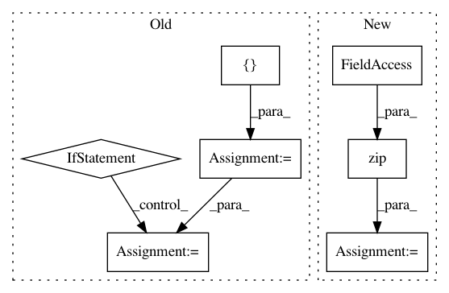

26421ce20c6b626ceacafbb3282cad1d5dce04ca,onmt/Models.py,Embeddings,forward,#Embeddings#Any#,60
Before Change
for j, feature_lut in enumerate(self.feature_luts)]
// Apply one MLP layer.
emb = self.activation(
self.linear(torch.cat([word] + features, -1)))
if self.positional_encoding:
emb = emb + Variable(self.pe[:emb.size(0), :1, :emb.size(2)]
.expand_as(emb))
emb = self.dropout(emb)
return emb
class Encoder(nn.Module):
After Change
emb (FloatTensor): len x batch x sum of feature embedding sizes
feat_inputs = (feat.squeeze(2) for feat in src_input.split(1, dim=2))
features = [lut(feat) for lut, feat in zip(self.emb_luts, feat_inputs)]
emb = self.merge(features)
return emb
In pattern: SUPERPATTERN
Frequency: 3
Non-data size: 7
Instances
Project Name: OpenNMT/OpenNMT-py
Commit Name: 26421ce20c6b626ceacafbb3282cad1d5dce04ca
Time: 2017-07-30
Author: bpeters@coli.uni-saarland.de
File Name: onmt/Models.py
Class Name: Embeddings
Method Name: forward
Project Name: chainer/chainercv
Commit Name: 827e12f3b9506e0f78cc79445441cd9d1f25c055
Time: 2018-04-24
Author: Hakuyume@users.noreply.github.com
File Name: chainercv/links/model/yolo/yolov3.py
Class Name: YOLOv3
Method Name: __call__
Project Name: keras-team/autokeras
Commit Name: 41c99fbf385a8c875fb6181ce7301e4bc218535b
Time: 2020-04-18
Author: jhfjhfj1@gmail.com
File Name: autokeras/keras_layers.py
Class Name: CategoricalEncoding
Method Name: call